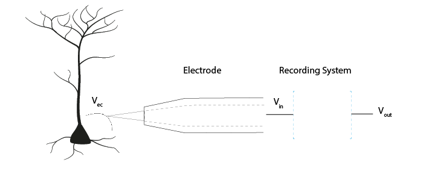
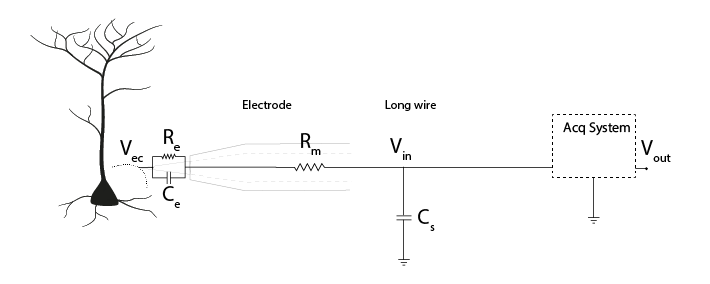
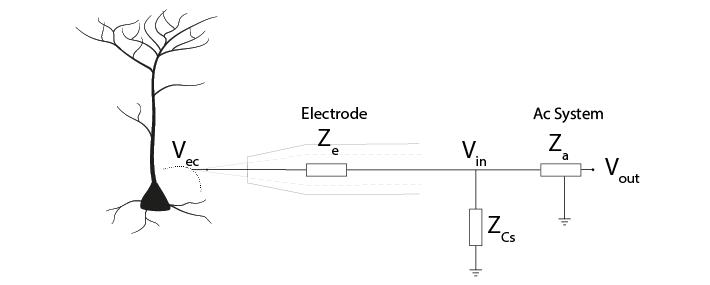
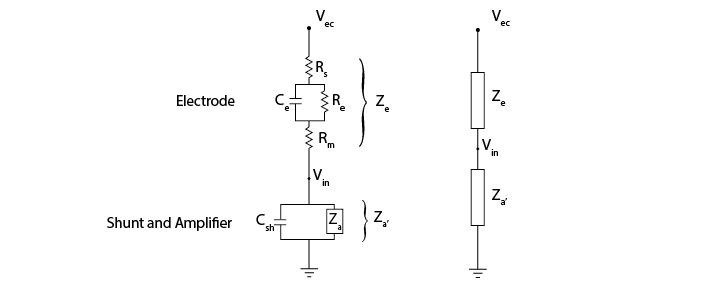
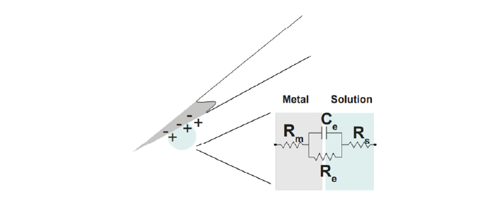
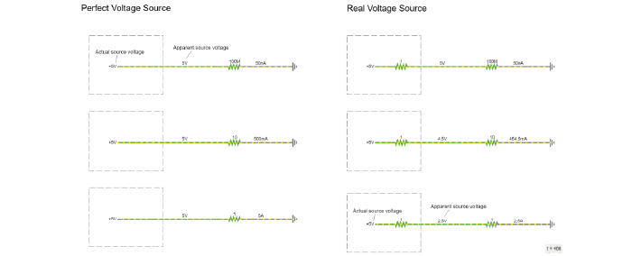
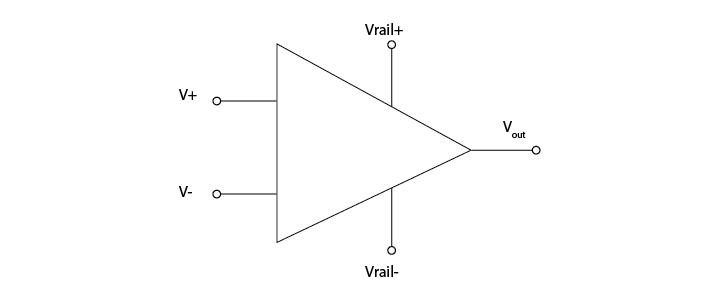
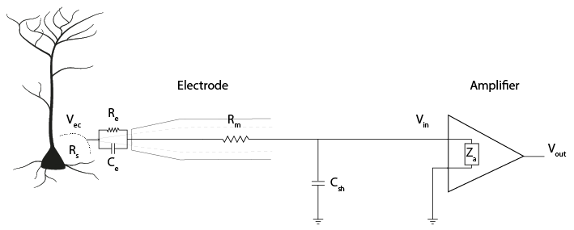
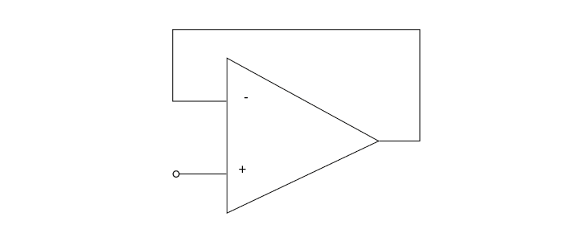

Teori Hari 2#
Kemarin, kita menyatakan bahwa sebuah sistem akuisisi harus:
Mendeteksi perubahan potensial listrik
Secara *akurat mentransfer* sinyal ke keluaran sistem
Membedakan sinyal biologis dari noise listrik
Rasio Impedansi Menentukan Transmisi Sinyal#

Sinyal Vec dihasilkan pada ujung elektroda. Vin adalah tegangan yang masuk ke sistem akuisisi, dan Vout adalah keluaran akhir sistem. Transfer sinyal yang akurat berarti meminimalkan kehilangan sinyal antara Vec, Vin, dan Vout.
Perilaku ini mengikuti prinsip pembagi tegangan, di mana tegangan pada komponen yang tersusun seri ditentukan oleh rasio impedansinya.
Mengapa Impedansi Penting?#
Gambar di bawah ini menunjukkan rangkaian ekuivalen dari sebuah elektroda. Sinyal Vec harus melewati elektroda untuk mencapai Vin. Dari sana, arus neuron dapat mengalir ke ground melalui dua jalur paralel:
Melalui sistem akuisisi
Melalui impedansi shunt yang tidak diinginkan
Impedansi shunt terutama bersifat kapasitif dan direpresentasikan oleh Cs. Kapasitansi parasitik ini muncul dari isolasi elektroda, kabel, dan konektor. Walaupun tidak dapat dihindari, efeknya sangat memengaruhi transmisi sinyal.

Merepresentasikan Komponen sebagai Impedansi#
Setiap komponen dapat direpresentasikan sebagai impedansinya (Z):

Impedansi kapasitansi shunt Zcs dan impedansi sistem akuisisi Za tersusun paralel. Keduanya dapat digabungkan menjadi satu impedansi ekuivalen Za’.

Hal ini menghasilkan sebuah pembagi tegangan:
Rasio antara Ze dan Za’ menentukan seberapa besar Vec yang muncul pada Vin.
Untuk mempertahankan amplitudo sinyal, impedansi elektroda |Ze| harus rendah dan impedansi masukan sistem |Za|’ harus tinggi.
Impedansi Elektroda#
Impedansi elektroda mencerminkan hambatan terhadap perpindahan muatan pada antarmuka elektroda–elektrolit. Impedansi ini terdiri dari:
Hambatan logam Rm
Hambatan larutan Rs
Hambatan lapisan ganda Re
Kapasitansi lapisan ganda Ce

Untuk elektroda terpolarisasi, Re sangat besar sehingga arus terutama mengalir melalui Ce. Oleh karena itu, impedansi elektroda didominasi oleh kapasitansi lapisan ganda.
Mengurangi Impedansi Elektroda#
Karena impedansi elektroda didominasi oleh Ce, meningkatkan Ce akan menurunkan Ze.
Kapasitansi meningkat dengan cara:
Memperbesar luas permukaan elektroda
Mengurangi jarak pemisah efektif
Metode praktis meliputi:
Pelapisan elektroda dengan emas (electroplating)
Pelapisan dengan polimer konduktif
Menggunakan oksida logam seperti IrOx
Impedansi elektroda umumnya diukur pada 1 kHz, di mana pelapisan dapat menurunkan impedansi hingga 10×.
Impedansi Shunt#
Impedansi shunt terdiri dari:
Kapasitansi shunt Cs
Hambatan shunt Rsh
Pada frekuensi sekitar 1 kHz, impedansi kapasitif mendominasi, sehingga Rsh sering diabaikan.
Kapasitansi shunt berasal dari:
Isolasi antara elektroda dan elektrolit
Kabel dan konektor
Nilai tipikal:
Kawat tungsten: ~50–100 pF
Probe silikon: ~5–20 pF/cm
Coba sendiri
Jelajahi efek impedansi elektroda dan shunt menggunakan model interaktif berikut:
Impedansi shunt menurun seiring peningkatan frekuensi:
Karena impedansi shunt tidak dapat dihindari, kompensasi dilakukan dengan meningkatkan impedansi sistem akuisisi.
Penguat (Amplifier)#
Mengapa Penguat Diperlukan#
Sinyal ekstraseluler bertindak sebagai sumber tegangan lemah dengan impedansi keluaran yang tidak nol. Jika impedansi rangkaian rendah, tegangan sinyal akan turun secara signifikan akibat aliran arus.

Penguat mencegah hal ini dengan menyediakan impedansi masukan yang sangat tinggi, sehingga meminimalkan arus yang ditarik dari elektroda.
Penguat Operasional#
Penguat operasional (op-amp) memiliki:
Dua masukan (+ dan −)
Satu keluaran
Dua rel catu daya

Penguat Memiliki Impedansi Masukan Tinggi#
Impedansi masukan penguat Za sangat tinggi, sehingga mencegah aliran arus dari elektroda dan mempertahankan Vec.

Penguat Memiliki Impedansi Keluaran Rendah#
Impedansi keluaran yang rendah memungkinkan penguat menyuplai arus ke komponen lanjutan seperti:
Kabel
Multiplexer
ADC
Hal ini memastikan bahwa arus disuplai oleh penguat, bukan oleh elektroda.
Perilaku Keluaran Penguat#
Op-amp menghasilkan keluaran berupa selisih tegangan antara kedua masukannya:
Selisih positif → keluaran jenuh pada rel positif
Selisih negatif → keluaran jenuh pada rel negatif
Tanpa umpan balik, op-amp bertindak sebagai komparator dengan penguatan yang sangat tinggi.
Umpan Balik Negatif Mencegah Kejenuhan#

Umpan balik negatif memaksa keluaran menyesuaikan hingga kedua masukan sama. Hal ini memungkinkan:
Pengukuran tegangan yang akurat
Impedansi masukan yang tinggi
Operasi linier yang stabil
Op-Amp sebagai Headstage#
Penguat headstage:
Mencegah penarikan arus dari elektroda
Menolak noise common-mode
Menskalakan sinyal agar sesuai dengan rentang masukan ADC